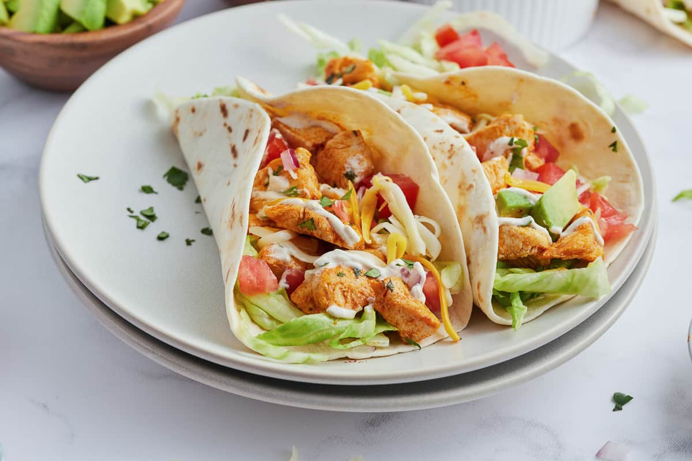

Ranch Chicken Tacos

Description
These ranch chicken tacos are a great change from regular Mexican-style tacos.
A quick, cool summer dinner made with leftover rotisserie chicken.
Ingredients
- 1/2 cup ranch dressing
- 1/4 cup reduced-fat sour cream
- 1 ounce packet taco seasoning mix
- 1 tablespoon mild chunky salsa
- 2 cups shredded rotisserie chicken
- 8 corn tortillas
- shredded lettuce
- 1 tomato, chopped
- 4 green onions, sliced
- 1 can sliced black olives
- 1 avocado
- 1 cup shredded Colby-Monterey Jack cheese
Steps
- Combine ranch dressing, sour cream, 1 teaspoon taco seasoning, and salsa in a small bowl.
- Cover and refrigerate until serving.
- Toss chicken with remaining taco seasoning.
- Cover bowl loosely with wax paper or plastic wrap.
- Microwave chicken until chicken is heated through, about 2 to 3 minutes.
- Warm tortillas in a skillet for about a minute on each side to make them pliable.
- Place a scoop of chicken on the tortilla and top with lettuce, tomato, green onion, olives, avocado, cheese, and a spoonful of the ranch dressing mixture.